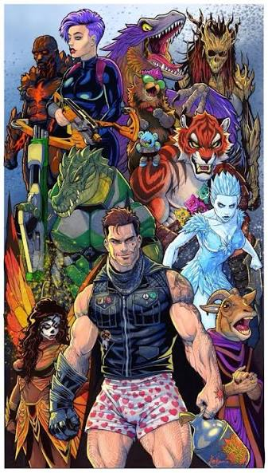
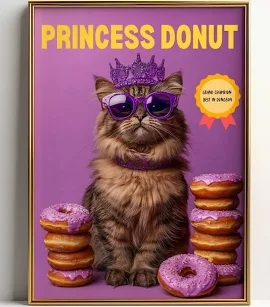
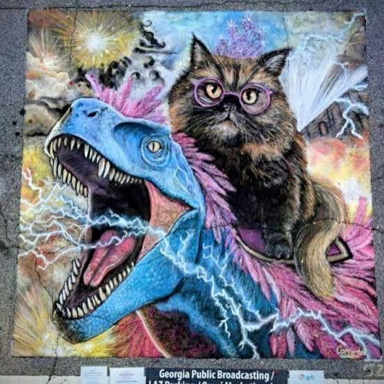
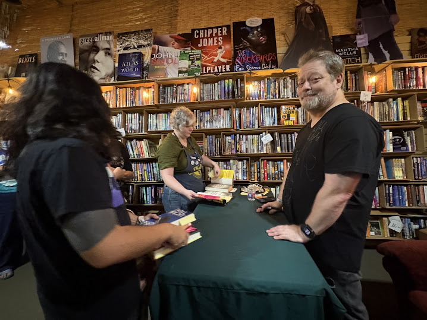

Why Dungeon Crawler Carl Is My Favorite Series

Okay so I finally finished every Dungeon Crawler Carl book that's out, and my brain is a little scrambled right now — in a good way. Matt Dinniman's fucked-up little dungeon world with Carl and Donut clawing through level after level of pure chaos is genuinely one of the best things I've listened to. Held up the whole damn way through.
Carl and Donut
"WHY DIDN'T YOUR MOTHER DRIBBLE YOU BACK OUT ONTO THE TRUCK STOP BATHROOM FLOOR, REZAN." — Donut, Dungeon Crawler Carl

Carl and Donut's dynamic is what hooked me first, no question. Their banter feels real as hell and it's what carries you through the insanity — buddy-cop energy, except one of the buddies is a foul-mouthed cat who thinks she's a princess. The escalating dungeon-crawl structure is genius. Every level gets more fucked up than the last, and somehow the stakes keep climbing right along with it.

The latest book, and my actual favorite
Not gonna lie, the newest book didn't hit as hard as I wanted it to. Maybe I hyped myself up too much after how good the earlier ones were, but this one felt a little off. Still good, just didn't punch the same. If you're making me pick a favorite though? Book 2, hands down — pacing, humor, the sheer insanity of what Carl and Donut get put through. That book's got it all.
Meeting Matt Dinniman and Jeff Hays

Something awesome happened recently — I got to meet Matt Dinniman and Jeff Hays in person at a signing. Both dudes are chill as hell and clearly still give a shit about this series as much as I do. Got my copies signed. Absolute win.
Newest book letdown aside, Dungeon Crawler Carl is still my favorite series, full stop. The humor, the tension, the sheer creativity of it keeps dragging me back, and with Jeff Hays behind the mic, it's hard to beat.